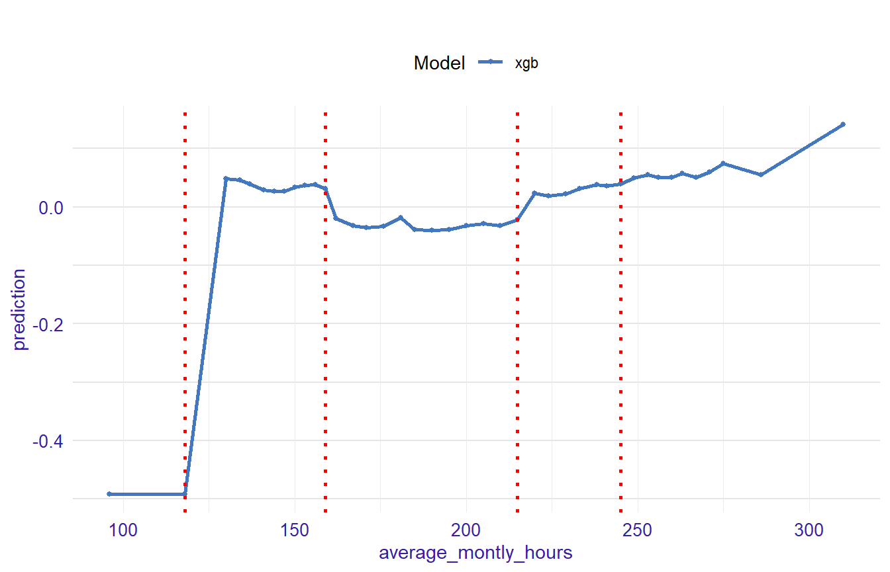

Classification example - HR dataset
Anna Gierlak
2019-07-21
Source:vignettes/example_hr.Rmd
example_hr.RmdIn this vignette we present an example of an application of SAFE package in case of classification problems. It is based on the HR_data dataset which comes from the breakDown package but is also available in the SAFE package. We will use this dataset to predict odds that someone will leave the company.
library(SAFE)
head(HR_data)
#> satisfaction_level last_evaluation number_project average_montly_hours
#> 1 0.38 0.53 2 157
#> 2 0.80 0.86 5 262
#> 3 0.11 0.88 7 272
#> 4 0.72 0.87 5 223
#> 5 0.37 0.52 2 159
#> 6 0.41 0.50 2 153
#> time_spend_company Work_accident left promotion_last_5years sales salary
#> 1 3 0 1 0 sales low
#> 2 6 0 1 0 sales medium
#> 3 4 0 1 0 sales medium
#> 4 5 0 1 0 sales low
#> 5 3 0 1 0 sales low
#> 6 3 0 1 0 sales lowBuilding a black-box model
First we fit a xgboost model to the original HR_data dataset - this is our complex model that will serve us as a surrogate. Before that we need to prepare our data.
data_hr_mm <- stats::model.matrix(left ~ ., data = HR_data)[,-1]
library(xgboost)
data_hr_dm <- xgb.DMatrix(data_hr_mm, label = (HR_data$left == "1"))
model_xgb <- xgb.train(params = list(objective = "binary:logistic"), data = data_hr_dm, nrounds = 100)Creating an explainer
We also create an explainer object that will be necessary to make use of functionalities of the SAFE package.
library(DALEX)
explainer_xgb <- explain(model_xgb,
data = data_hr_mm,
y = HR_data$left,
label = "xgb")
explainer_xgb
#> Model label: xgb
#> Model class: xgb.Booster
#> Data head :
#> satisfaction_level last_evaluation number_project average_montly_hours
#> 1 0.38 0.53 2 157
#> 2 0.80 0.86 5 262
#> time_spend_company Work_accident promotion_last_5years saleshr salesIT
#> 1 3 0 0 0 0
#> 2 6 0 0 0 0
#> salesmanagement salesmarketing salesproduct_mng salesRandD salessales
#> 1 0 0 0 0 1
#> 2 0 0 0 0 1
#> salessupport salestechnical salarylow salarymedium
#> 1 0 0 1 0
#> 2 0 0 0 1Creating a safe_extractor
Now, we create a safe_extractor object using SAFE package and our surrogate model. Setting the argument verbose=FALSE stops progress bar from printing.
safe_extractor <- safe_extraction(explainer_xgb, verbose = FALSE)Now, let’s print summary for the new object we have just created.
print(safe_extractor)
#> Variable 'satisfaction_level' - selected intervals:
#> (-Inf, 0.11]
#> (0.11, 0.29]
#> (0.29, 0.46]
#> (0.46, 0.7]
#> (0.7, Inf)
#> Variable 'last_evaluation' - selected intervals:
#> (-Inf, 0.43]
#> (0.43, 0.77]
#> (0.77, 0.98]
#> (0.98, Inf)
#> Variable 'number_project' - selected intervals:
#> (-Inf, 4]
#> (4, Inf)
#> Variable 'average_montly_hours' - selected intervals:
#> (-Inf, 118]
#> (118, 159]
#> (159, 215]
#> (215, 245]
#> (245, Inf)
#> Variable 'time_spend_company' - selected intervals:
#> (-Inf, 4]
#> (4, Inf)
#> Variable 'Work_accident' - no transformation suggested.
#> Variable 'promotion_last_5years' - no transformation suggested.
#> Variable 'saleshr' - no transformation suggested.
#> Variable 'salesIT' - no transformation suggested.
#> Variable 'salesmanagement' - no transformation suggested.
#> Variable 'salesmarketing' - no transformation suggested.
#> Variable 'salesproduct_mng' - no transformation suggested.
#> Variable 'salesRandD' - no transformation suggested.
#> Variable 'salessales' - no transformation suggested.
#> Variable 'salessupport' - no transformation suggested.
#> Variable 'salestechnical' - no transformation suggested.
#> Variable 'salarylow' - no transformation suggested.
#> Variable 'salarymedium' - no transformation suggested.We can see transormation propositions for all variables in our dataset.
In the plot below we can see which points have been chosen to be the breakpoints for a particular variable:
plot(safe_extractor, variable = "average_montly_hours")
Transforming data
Now we can use our safe_extractor object to create new categorical features in the given dataset.
data_xgb <- safely_transform_data(safe_extractor, data_hr_mm, verbose = FALSE)| satisfaction_level | last_evaluation | number_project | average_montly_hours | time_spend_company | Work_accident | promotion_last_5years | saleshr | salesIT | salesmanagement | salesmarketing | salesproduct_mng | salesRandD | salessales | salessupport | salestechnical | salarylow | salarymedium | satisfaction_level_new | last_evaluation_new | number_project_new | average_montly_hours_new | time_spend_company_new |
|---|---|---|---|---|---|---|---|---|---|---|---|---|---|---|---|---|---|---|---|---|---|---|
| 0.38 | 0.53 | 2 | 157 | 3 | 0 | 0 | 0 | 0 | 0 | 0 | 0 | 0 | 1 | 0 | 0 | 1 | 0 | (0.29, 0.46] | (0.43, 0.77] | (-Inf, 4] | (118, 159] | (-Inf, 4] |
| 0.80 | 0.86 | 5 | 262 | 6 | 0 | 0 | 0 | 0 | 0 | 0 | 0 | 0 | 1 | 0 | 0 | 0 | 1 | (0.7, Inf) | (0.77, 0.98] | (4, Inf) | (245, Inf) | (4, Inf) |
| 0.11 | 0.88 | 7 | 272 | 4 | 0 | 0 | 0 | 0 | 0 | 0 | 0 | 0 | 1 | 0 | 0 | 0 | 1 | (-Inf, 0.11] | (0.77, 0.98] | (4, Inf) | (245, Inf) | (-Inf, 4] |
| 0.72 | 0.87 | 5 | 223 | 5 | 0 | 0 | 0 | 0 | 0 | 0 | 0 | 0 | 1 | 0 | 0 | 1 | 0 | (0.7, Inf) | (0.77, 0.98] | (4, Inf) | (215, 245] | (4, Inf) |
| 0.37 | 0.52 | 2 | 159 | 3 | 0 | 0 | 0 | 0 | 0 | 0 | 0 | 0 | 1 | 0 | 0 | 1 | 0 | (0.29, 0.46] | (0.43, 0.77] | (-Inf, 4] | (118, 159] | (-Inf, 4] |
| 0.41 | 0.50 | 2 | 153 | 3 | 0 | 0 | 0 | 0 | 0 | 0 | 0 | 0 | 1 | 0 | 0 | 1 | 0 | (0.29, 0.46] | (0.43, 0.77] | (-Inf, 4] | (118, 159] | (-Inf, 4] |
We can also perform feature selection if we wish. For each original feature it keeps exactly one of their forms - original one or transformed one.
vars <- safely_select_variables(safe_extractor, data_xgb, y = HR_data$left, verbose = FALSE)
data_xgb <- cbind(HR_data["left"], data_xgb[,vars])
print(vars)
#> [1] "Work_accident" "promotion_last_5years"
#> [3] "saleshr" "salesIT"
#> [5] "salesmanagement" "salesmarketing"
#> [7] "salesproduct_mng" "salesRandD"
#> [9] "salessales" "salessupport"
#> [11] "salestechnical" "salarylow"
#> [13] "salarymedium" "satisfaction_level_new"
#> [15] "last_evaluation_new" "number_project_new"
#> [17] "average_montly_hours_new" "time_spend_company_new"It can be observed that for some features the original form was preffered and for others the transformed one.
Here are the first few rows for our data after feature selection:
| left | Work_accident | promotion_last_5years | saleshr | salesIT | salesmanagement | salesmarketing | salesproduct_mng | salesRandD | salessales | salessupport | salestechnical | salarylow | salarymedium | satisfaction_level_new | last_evaluation_new | number_project_new | average_montly_hours_new | time_spend_company_new |
|---|---|---|---|---|---|---|---|---|---|---|---|---|---|---|---|---|---|---|
| 1 | 0 | 0 | 0 | 0 | 0 | 0 | 0 | 0 | 1 | 0 | 0 | 1 | 0 | (0.29, 0.46] | (0.43, 0.77] | (-Inf, 4] | (118, 159] | (-Inf, 4] |
| 1 | 0 | 0 | 0 | 0 | 0 | 0 | 0 | 0 | 1 | 0 | 0 | 0 | 1 | (0.7, Inf) | (0.77, 0.98] | (4, Inf) | (245, Inf) | (4, Inf) |
| 1 | 0 | 0 | 0 | 0 | 0 | 0 | 0 | 0 | 1 | 0 | 0 | 0 | 1 | (-Inf, 0.11] | (0.77, 0.98] | (4, Inf) | (245, Inf) | (-Inf, 4] |
| 1 | 0 | 0 | 0 | 0 | 0 | 0 | 0 | 0 | 1 | 0 | 0 | 1 | 0 | (0.7, Inf) | (0.77, 0.98] | (4, Inf) | (215, 245] | (4, Inf) |
| 1 | 0 | 0 | 0 | 0 | 0 | 0 | 0 | 0 | 1 | 0 | 0 | 1 | 0 | (0.29, 0.46] | (0.43, 0.77] | (-Inf, 4] | (118, 159] | (-Inf, 4] |
| 1 | 0 | 0 | 0 | 0 | 0 | 0 | 0 | 0 | 1 | 0 | 0 | 1 | 0 | (0.29, 0.46] | (0.43, 0.77] | (-Inf, 4] | (118, 159] | (-Inf, 4] |
Creating white-box models on original and transformed datasets
Let’s fit a logistic regression model as a white-box model to data containg newly created columns:
Moreover, we create a logistic regression model based on original HR_data dataset in order to check if our methodology improves results.
Comparing models performance
Final step is the comparison of all the models we have created. For that purpose we make predictions and print confusion matrices for all three models:
confusion_matrix <- function(y_true, y_pred) {
cm <- data.frame(pred_0 = c(sum(y_true==0 & y_pred==0), sum(y_true==1 & y_pred==0)),
pred_1 = c(sum(y_true==0 & y_pred==1), sum(y_true==1 & y_pred==1)))
rownames(cm) <- c("actual_0", "actual_1")
cm
}
y_true <- HR_data$left
pred_xgb <- round(predict(model_xgb, data_hr_mm))
pred_lr1 <- round(predict(model_lr1, type = 'response'))
pred_lr2 <- round(predict(model_lr2, type = 'response'))
confusion_matrix(y_true, pred_xgb)
#> pred_0 pred_1
#> actual_0 11419 9
#> actual_1 39 3532
confusion_matrix(y_true, pred_lr1)
#> pred_0 pred_1
#> actual_0 10614 814
#> actual_1 2301 1270
confusion_matrix(y_true, pred_lr2)
#> pred_0 pred_1
#> actual_0 10981 447
#> actual_1 434 3137We can see that the xgboost model has much higher accuracy than the original logistic regression model. But using transformations extracted from the more complicated xgboost model we can improve the performace of the simpler one.